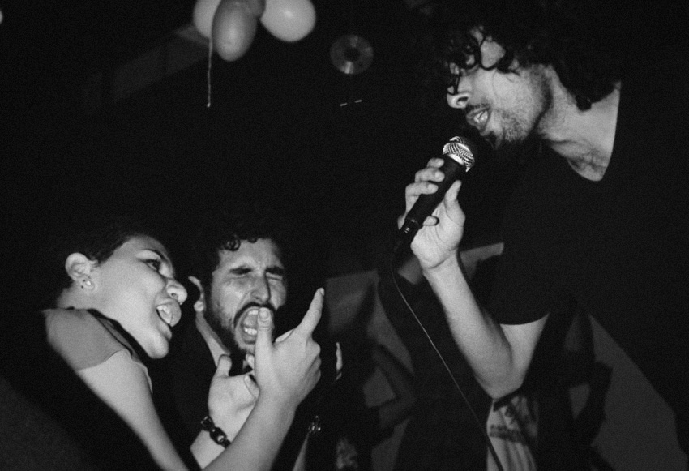
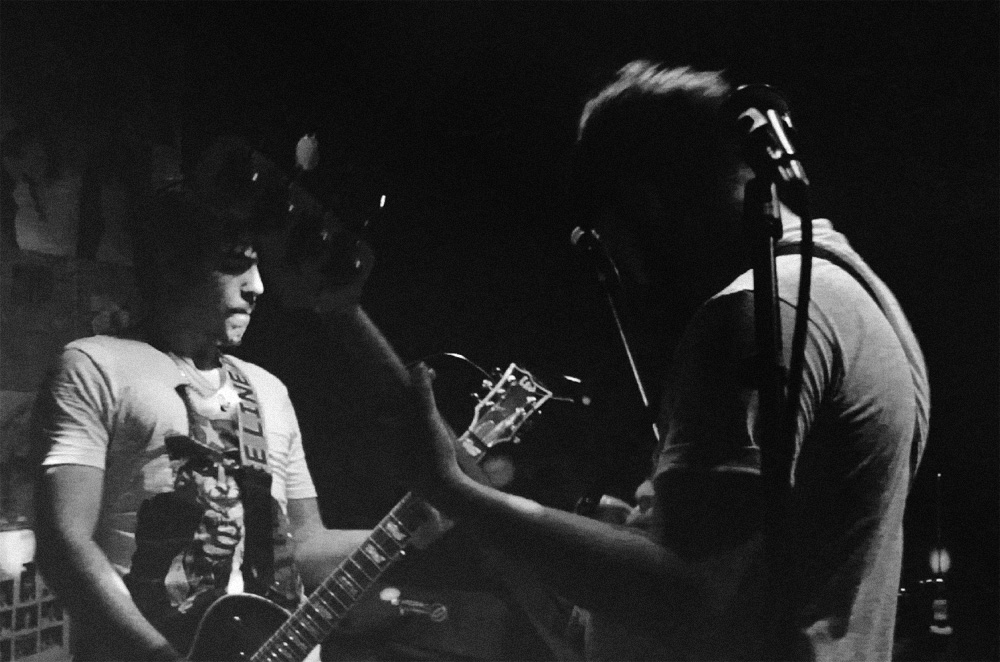

Antes mesmo de termos um nome, o desejo, a ideologia, o pensamento e os sentimentos sobre o mundo, já nos faziam cantar. Então por que não juntar pessoas que possam cantar no mesmo som? Com este objetivo, Douglas Nonato e Bruno Beraldo, no ano de 2012, se juntaram começando um projeto musical formado por composições próprias.
O projeto foi tomando corpo, surgindo assim à necessidade de recrutar mais pessoas para que contribuíssem com o som.
A busca pelos novos integrantes continuou até encontrarmos um baterista e um baixista, que fossem totalmente comprometidos com o trabalho musical e pudessem levar o projeto para frente. Assim, Leonardo Matuchaki (Bateria) e Kendy Nojima (Baixo) se juntam ao grupo.
Desta forma nasce, em uma junção entre as palavras Revolução e Volk ("Povo" em alemão), a revolução está em cada uma das nossas composições, por vezes em uma revolta sonora com letras sociais, em outras com sentido de transformação profunda com letras sentimentais e existenciais.
Banda formada por:
Bruno Beraldo (Vocais),
Douglas Nonato (Guitarras)
Kendy Nojima (Baixo e Vocais).